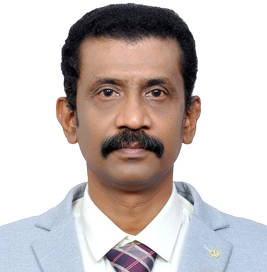
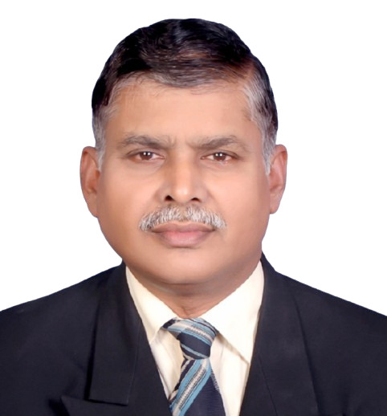
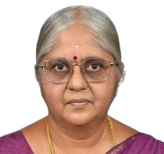

08
Distinguished Voices in Webinars
Knowledge shared through webinars
Recognising TTPA members who have organised, contributed to, or participated in distinguished academic webinars and knowledge-sharing programmes.

01Dr. S. Balasubramanian
Organised Global Veterinary Clinical Sciences Webinar 2026.
Read Profile →
02Dr. R. Prabakaran
Addresses Global Veterinary Challenges and Opportunities.
Read Profile →
03Dr. C. Valli
Delivers Insightful Webinar on Climate-Resilient Forage Systems.
Read Profile → 04Dr. (Capt.) G. Dhanan Jaya Rao
Moderates International Webinar with Distinction.
Read Profile →